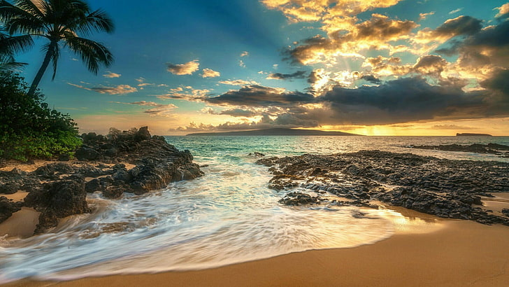
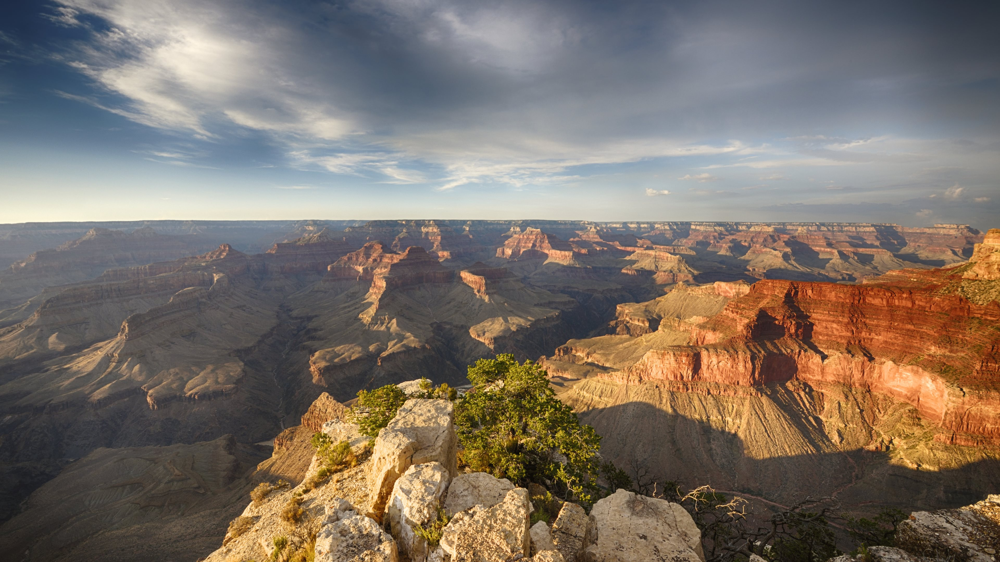

Glacier National Park, Montana

Named for the remnants of glaciers from the ice age, Glacier National Park is located on the border of Canada and Montana. It is often called the "Crown of the Continent," because of its dizzying array of natural beauty. A favorite spot among hikers, the park features a variety of trails for all skill levels, ranging from the easy Trail of the Cedars (home to towering and beautiful cedars) to the challenging Grinnell Glacier (which offers sweeping views). What's more, the park boasts more than 700 lakes, numerous waterfalls and two mountain ranges, spread across more than 1 million acres that shelter a variety of wildlife.
Aside from its breathtaking geological features, it's also home to a fair amount of history. The Going-to-the-Sun Road – a scenic, 50-mile drive through the park – is a National Historic Landmark and an engineering marvel that offers spectacular views, as well as access to popular hiking trails. Plus, many of the park's lodges, chalets and hotels were constructed by the Great Northern Railway in the early 20th century and are on the National Register of Historic Places. Care to visit a UNESCO World Heritage Site? You'll find that here, too: the Waterton-Glacier International Peace Park.
To limit the number of people visiting the park, Glacier National Park implemented a ticketed entry system through Sept. 6, 2021 for certain park entrances. Visit the National Park Service's website for additional information.
Maui, Hawaii
Maui is not nearly as large as the Big Island, nor is it as small as Lanai, as bustling as Oahu or as quiet as Kauai. For many Hawaii vacationers, Maui is just right – offering a taste of just about everything the Aloha State has to offer, from impressive wildlife to intriguing history and culture. While on a visit here, you can shimmy alongside professional hula dancers, golf along coastal fairways, sail down a zip line, snorkel alongside five different types of sea turtles or simply lounge along some of Hawaii's most notable beaches.
One of the archipelago's most popular tourism spots, Maui can be found sandwiched between the Big Island and the much tinier Molokai (which you can explore by signing up for one of the best Maui tours). Maui is divided into five distinct regions: Many travelers base themselves along the coasts of South Maui (home to the famous Wailea Beach) or West Maui, where the sands of Kaanapali Beach and the music from the Old Lahaina Luau are located. But the rest of the island should not be missed. Travel along the Road to Hana to experience East Maui's scenic coastline, explore Haleakala – the world's largest dormant volcano – in the Upcountry and discover the former tribal battlegrounds of Central Maui's Iao Valley State Park. And for a bird's-eye view of it all, reserve a spot on one of Maui's best helicopter tours.
Grand Canyon National Park, Arizona
"Grand" doesn't begin to do this canyon justice. Measuring approximately 277 river miles in length, up to 18 miles in width and a mile deep, this massive chasm in northern Arizona is truly a natural wonder. For 6 million years, the Grand Canyon has expanded with the help of the mighty Colorado River, and for centuries, people from all over the globe have traveled to gaze out over its red and orange grandeur. Managed by the National Park Service and officially designated as a UNESCO World Heritage Site, the Grand Canyon leaves its approximately 4 million visitors per year awestruck.
But if you're seeking a secluded escape to Mother Nature, you should be prepared: The Grand Canyon can be very crowded. The South Rim – home to the Grand Canyon Village and the well-worn Bright Angel Trail – is particularly popular for sightseers and hikers. It is on this side that you'll find the most amenities. For a break from the crowds, head to the North Rim. This is the place for backwoods camping and hardcore hiking. For an unforgettable view of the canyon, consider signing up for a helicopter tour.